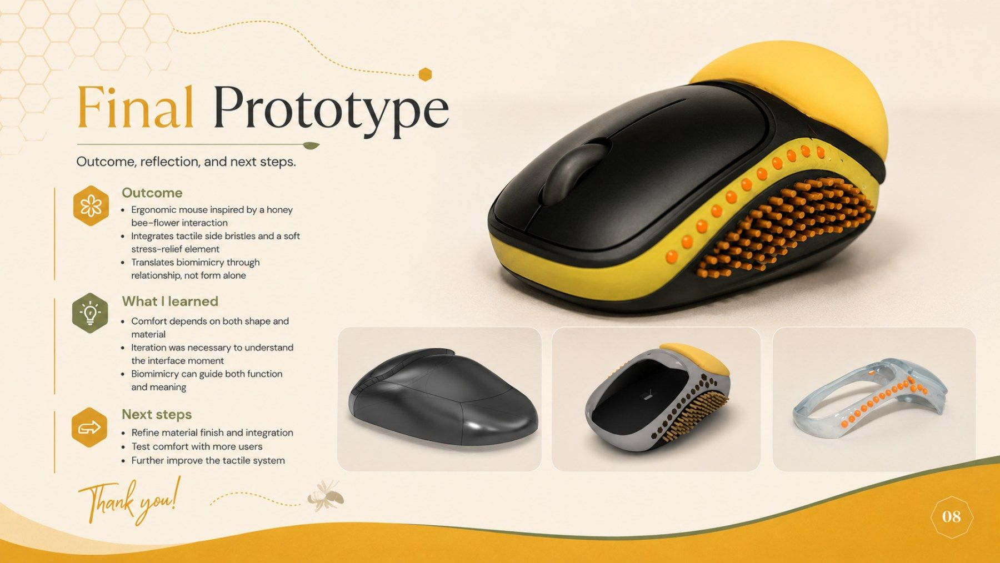
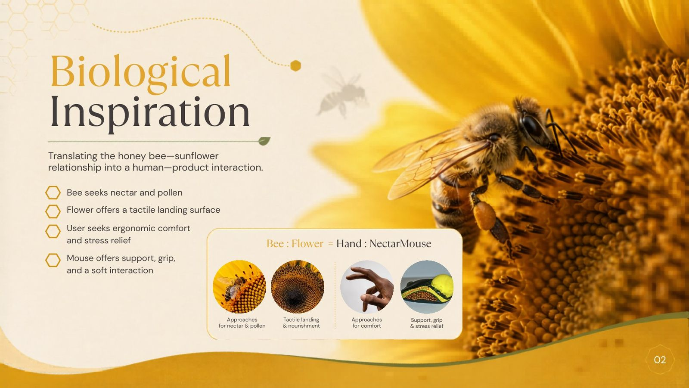
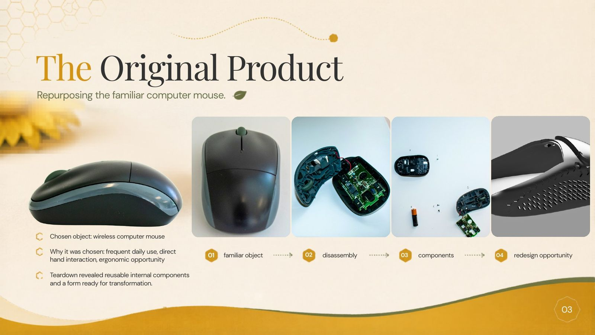
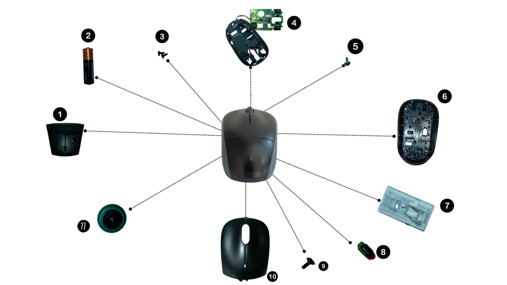
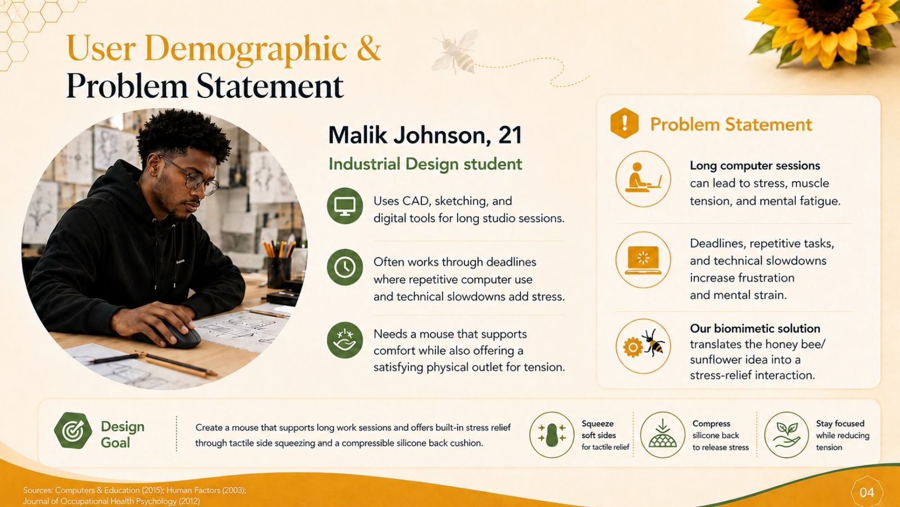
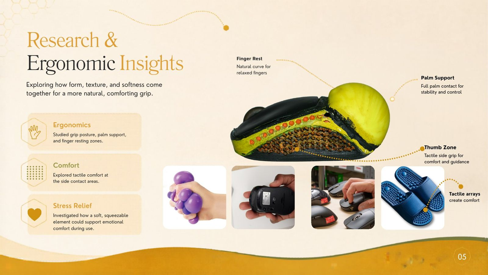
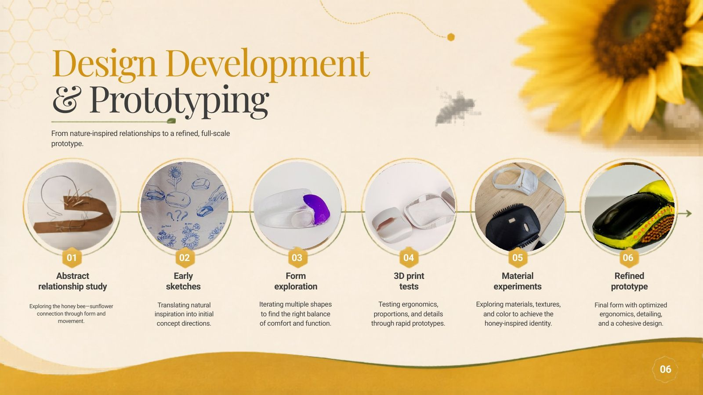
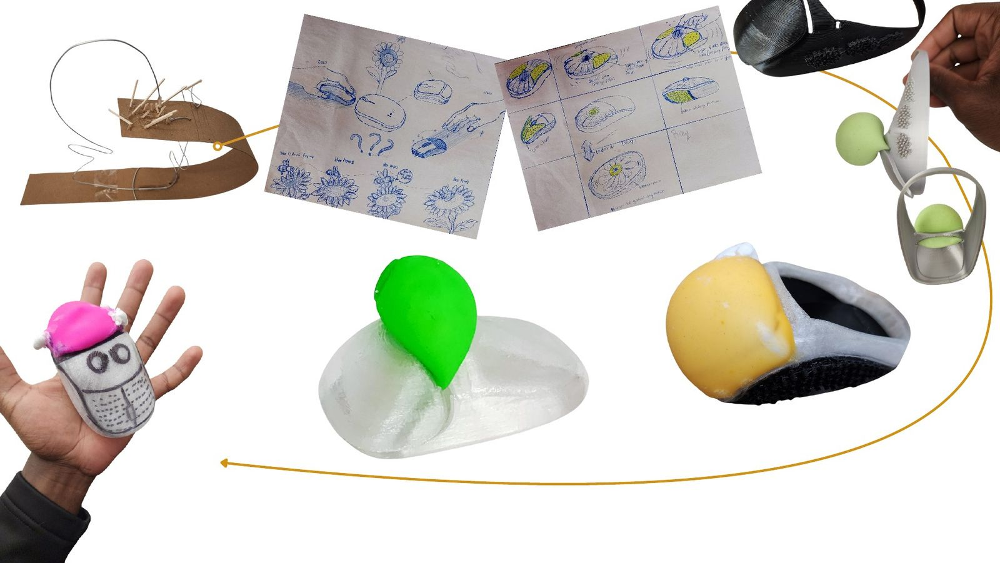
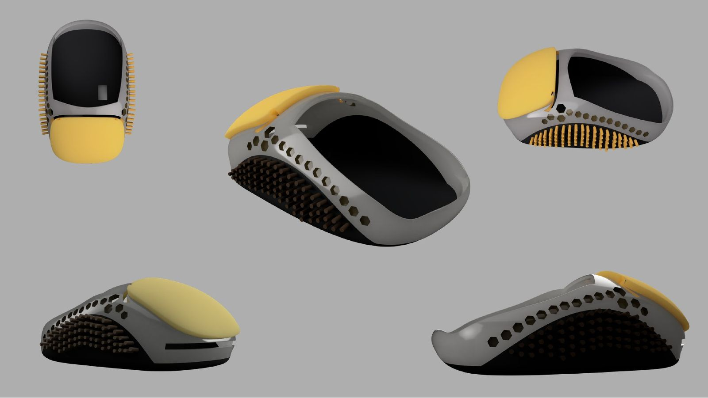
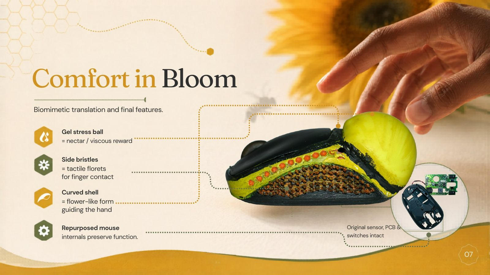

Industrial design · Ergonomics · Biomimicry
NectarMouse
An ergonomic mouse modeled on a bee landing on a sunflower

The problem
Long computer sessions build up stress, muscle tension and mental fatigue, especially under deadlines with repetitive work. I designed for a persona: a 21-year-old design student who spends long studio sessions in CAD and needs a mouse that is comfortable and also gives him a physical outlet for tension.
My role
I worked alone, from the teardown and ergonomic research through form studies, 3D-printed iterations and the final prototype.
Process
Borrow a relationship from nature
A bee approaches a sunflower looking for nectar, and the flower offers a tactile landing surface. A hand approaches a mouse looking for comfort, and the mouse can offer support, grip and a soft interaction. So bee is to flower as hand is to NectarMouse.

Biological inspiration: the honey bee and sunflower Tear down the original
I took apart a wireless mouse to understand its components. The sensor, PCB and switches could be reused, which freed the shell to be completely redesigned.

The original product 
Teardown Define who it’s for
The design goal: a mouse that supports long work sessions and has built-in stress relief, through squeezable soft sides and a compressible silicone back cushion. I studied grip posture, palm support, finger rest and thumb zones.

User demographic and problem statement 
Research and ergonomic insights Prototype until it feels right
I moved from abstract relationship studies to sketches, multiple printed forms, ergonomic print tests and material experiments, aiming for the right balance of comfort and function and a honey-inspired identity.

Design development: six stages 
Sketches, material tests and soft elements 
Refined 3D-printed forms
Outcome
The final prototype pairs a gel stress ball (the “nectar”), tactile side bristles (the “florets”) and a curved, flower-like shell around the original electronics.

What I learned
- Comfort depends on both shape and material.
- Iteration was necessary to understand the moment a hand meets the interface.
- Biomimicry can guide function and meaning, not just form.
- Next: refine material finish and integration, and test comfort with more users.